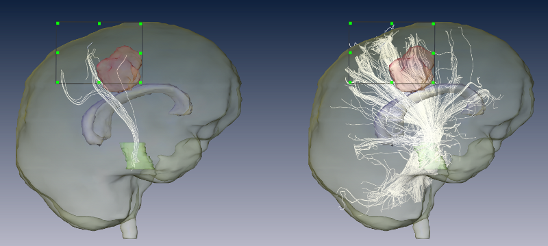

This tutorial gives step-by-step instructions on fiber tracking in Amira. The tutorial assumes that the user is familiar with generating a tensor field (see tutorials on data pre-processing and tensor computation). Alternatively, an analytic tensor field generated by AnalyticTensorField can be sampled by ArithmeticTensor and used for large parts of this tutorial.
Note that the tutorial is rather demanding with respect to memory usage so that some steps may fail or become slow on 32 Bit systems. It is recommended, therefore, to conduct this tutorial on a 64 Bit workstation with sufficient physical memory installed.
The tutorial will cover the following topics:
Fiber tracking visualizes restricted water diffusion and correlates well with axonal fiber tracts in the white matter. Instead of displaying glyphs or color values for each voxel, an integration starting at seed voxel locations provides a more direct comparison with tracts seen in the brain. It has to be stressed that there is no direct comparison of the fibers generated by fiber tracking with the axonal fiber bundles in the brain. The measurement resolution of the MR scans is much too low to allow any direct display of single fibers. Also, we do not measure the tracts directly but just an effect that these structures have on water diffusion. Nevertheless, fiber tracking has proven to be a valuable tool for accessing the major connection pathways in the brain. Note, however, that especially in cases with tumors like the one provided with this tutorial, care has to be taken in interpreting the data. This is because tumor oedema might disturb diffusion and thus might erroneously indicate fiber-free regions.
We start by generating the tensor with a script:
This creates the tensor field from the existing files in the tutorial directory. A detailed tutorial on how to create the tensor from the gradient weighted images is given in Tensor Computation.
The eigenvalue decomposition is a step that converts the tensor information into a more manageable format. The vector of the first eigenvector points in the direction of largest elongation of the tensor as displayed by TensorDisplay. The corresponding first eigenvalue encodes the strength of the diffusion in that direction.
The process of fiber tracking is done in two parts. First a set of fibers is created, usually at a density high enough so that regions of interest are represented sufficiently well. In a second step the fibers are pruned. In this way a single fiber tract like the pyramidal tract can be followed through the brain and is not obstructed by competing fiber bundles.
Fiber tracking is performed by module FiberTacking that needs to be connected to the first principal eigenvector generated from the tensor field (B0._evec1) by ExtractEigenvalues. The module will connect on its own to the field which contains the eigenvalues based on the name of the connected eigenvector field. In order to work, FiberTracking needs an additional input label field.
The connection to the Mask connection port is required and ensures that no fibers are generated outside the brain. The mask also directs the generation of seed point which are the voxels at which fiber lines start.
Module FiberTracking provides three algorithms that can improve the tracking in case of noise in the data. The optional fiber tracking algorithm tensor deflection is used, if together with the eigenvectors and eigenvalues also a tensor field is connected to FiberTracking (connection port Tensor). The two ports Tensor weight g and Tensor weight f control the influence of streamline fiber tracking and tensor deflection on the resulting fibers.
This type of fiber tracking provides a smoothing effect that can degrade high curvature fiber tracts and has therefore to be used with care. In areas with crossing or touching fiber bundles, tensor deflection can be used as a means of supporting continuation of the fiber direction. In general, simple streamline fiber tracking is sufficient to extract a representation of major fiber tracts.
For larger areas the fiber tracking module will present a dialog box and ask the user if the region should be used as a seed region. Small regions like the corpus callosum or seed regions in the brain stem will automatically result in one line set per material. Fibers are started in their seed regions but traced in all non-Exterior regions, which makes it essential that the brain mask contain the whole brain.
FiberTracking will create LineSet objects for each label in the connected Mask data set. They represent fiber bundles for the materials BS1 and BS2. These regions are close to the brain stem and contain ascending fibers. Some of them reach up through the pyramidal tract into the motor cortex.
Each line contains additional data values for each vertex. The first value is the local fractional anisotropy, the next values are the three local eigenvalues and a time stamp generated during the integration in the tensor field.
The line sets can be displayed using LineSetView or DisplayISL (the latter requires an AmiraMesh license). These modules are fast enough to render larger numbers of fibers.
In order to remove fibers that are not required, the SelectLines module is used. But before we start using the module, we need to create a display that shows the structures that we are interested in. This will help with the navigation required to extract individual fiber bundles.
The brain surface, the tumor, the corpus callosum, and the two brainstem areas are visible together with line sets that represent the fibers initiating from the right side of the brainstem.
SelectROI is used to adjust the location of the end region. A second or third SelectROI can be created for the line set and connected to the additional input connections of SelectLines. The filtering is provided by SelectLines in a way that its output will only display fibers that have vertices that are inside all of the regions of interest. By adjusting the position and size of the regions of interest a subset of fibers is created as output line set. It is convenient to use the auto-refresh checkbox of SelectLines to be able to visualize fibers while moving the SelectROI.
SelectLines also allows the user to mask lines based on the values attached to the vertices or by an additional label field.
In some cases it is beneficial to be able to create a label field from the generated line sets. The label field can be used to create a surface representation of the fiber bundle or to export a data set that overlays the fiber bundle with the anatomical data. The FiberTracking module contains a convenient Tcl command that generates such a label field.
This will create a new label field with the dimensions 100$$\times$$100$$\times$$100 that contains for each vertex of the line set object the value 1 against a uniform background with the value 0.